澳洲川渝文化教育体育协会、澳洲重庆市商会协办第三届维州创新展，黄欣悦会长与政商嘉宾共话AI、中澳合作与Human Experience
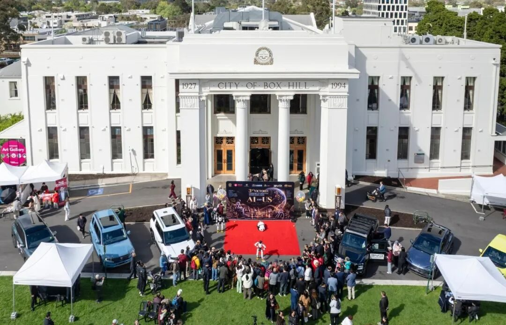
【墨尔本讯】2026年10月4日，第三届维州创新展暨美食文化节在墨尔本Box Hill市政厅举行。活动由聚澳传媒（Ausfocus International Media Group）与澳亚商贸发展协会联合主办，澳洲川渝文化教育体育协会、澳洲重庆市商会等机构协办，比亚迪（BYD）担任首席赞助商。
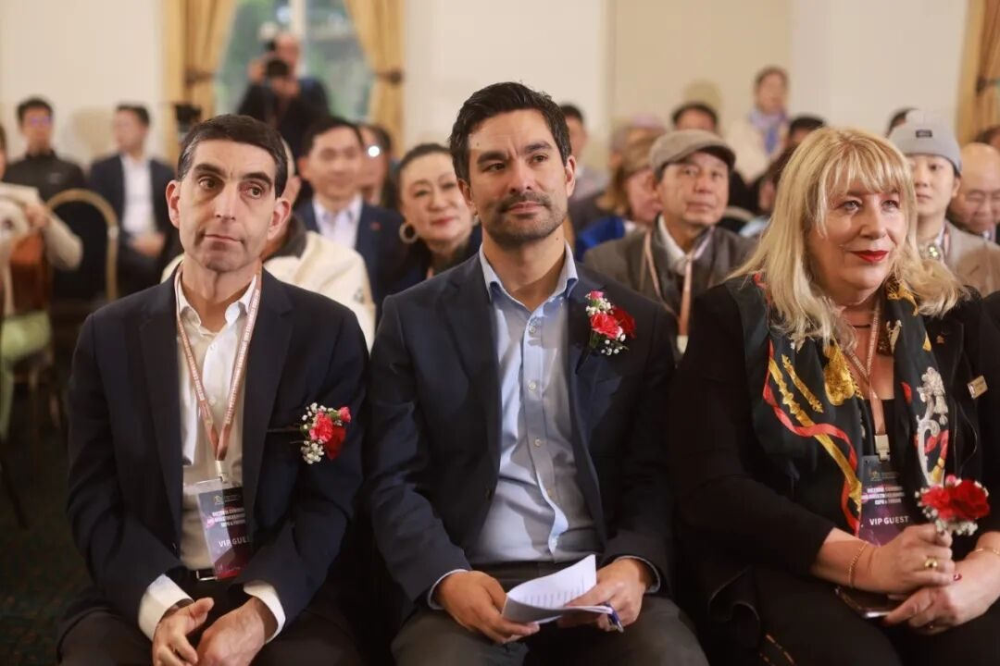
活动设有双边经贸论坛、主题演讲、商业展示及文化体验等环节，内容涵盖人工智能、新能源汽车、金融服务、教育、康养、家居、美食及生活方式等领域，为企业、公共机构与社区提供跨行业、跨文化的交流平台。
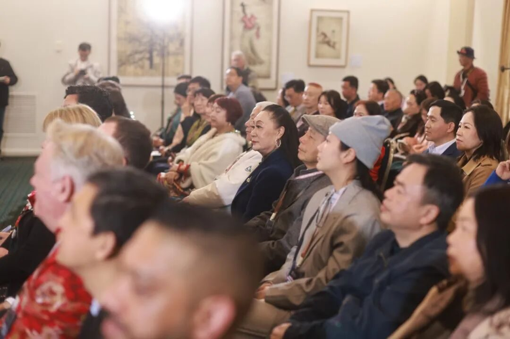
以下嘉宾出席了活动：
中国驻墨尔本总领事房新文
维州道路及道路安全部长、Box Hill选区州议员Paul Hamer MP
Menzies选区联邦众议员Gabriel Ng MP
维州制造业与创新影子部长、人工智能与数字经济影子部长Richard Welch MP
维州议员Aiv Puglielli
白马市市长Cr Kirsten Langford
澳洲川渝文化教育体育协会主席、澳洲重庆市商会会长、HYSTON创始人黄欣悦（Hyston Huang）以VIP嘉宾身份出席，并参加双边经贸论坛。
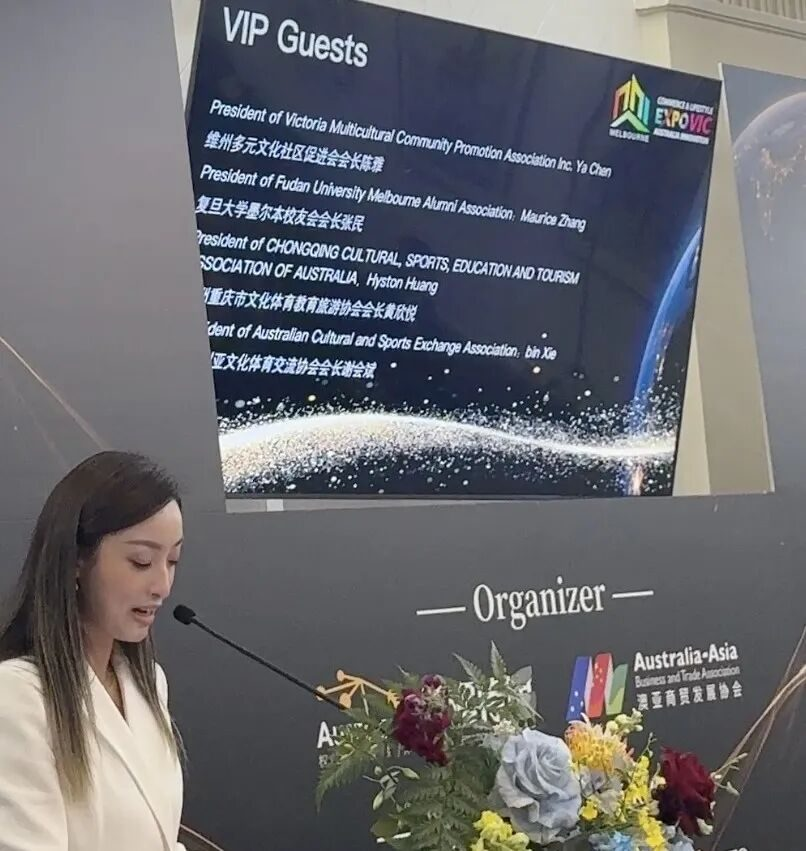
论坛聚焦AI基础设施、商业转化与公众信任
Richard Welch MP在发言中重点讨论了人工智能基础设施、数据中心、社会许可、监管框架与商业化路径。他表示，社会需要认真讨论如何引导技术发展，在释放创新潜力的同时，应对隐私、青少年保护、深度伪造及网络安全等风险。他将数据中心比作铁路网络，认为算力设施对区域竞争力具有基础性作用。他同时指出，真正的经济价值更多来自围绕基础设施形成的企业、服务与商业应用。从创意、知识产权到产品和市场的转化路径，以及AI如何进入企业核心经营，是其发言的重点。
Wei Xiang教授以"From Data Centres to AI Factories: Powering Victoria's Innovation Economy"为题发表主旨演讲，探讨算力基础设施、AI产业体系与维州创新经济之间的关系。
Aiv Puglielli议员关注数字经济、绿色转型与社区未来，强调推动创新的同时需要建立相应的风险防范机制。
白马市市长Cr Kirsten Langford在致辞中回顾了个人与科技发展的经历。她于1978年首次访问中国，此后学习应用科学，进入健康科技领域，并曾在Telstra从事移动通信相关工作。她表示，上世纪90年代对手机拍照、远程控制家居、视频会议等功能的设想，如今均已成为现实。她认为中澳在科技、人工智能与商业领域的合作将持续创造新机遇，并鼓励社区在重视安全与责任的前提下积极拥抱创新。
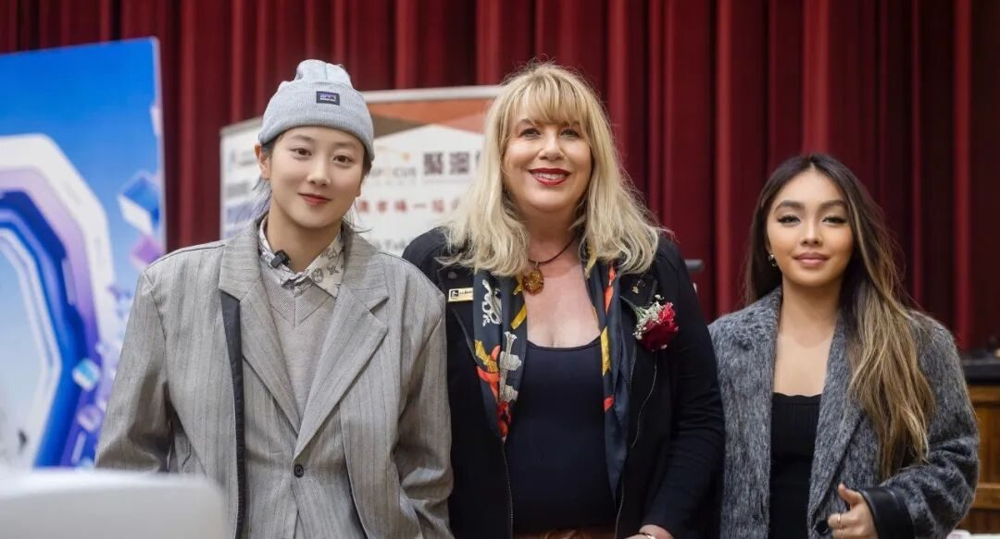
白马市市长 Cr Kirsten Langford 与 HYSTON 团队成员 Hyston、Daisy 现场交流。
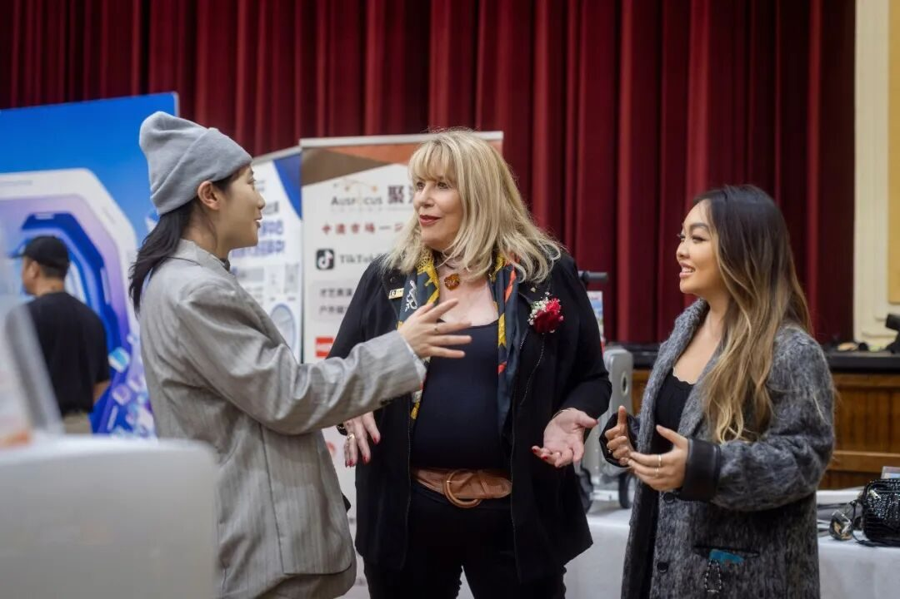
BYD Nunawading经销商负责人James Boulton在发言中指出，新能源汽车消费者更关心充电便利性、空间实用性，以及车辆如何融入日常生活，而非抽象的技术参数。
与房新文总领事交流HYSTON最新AI项目
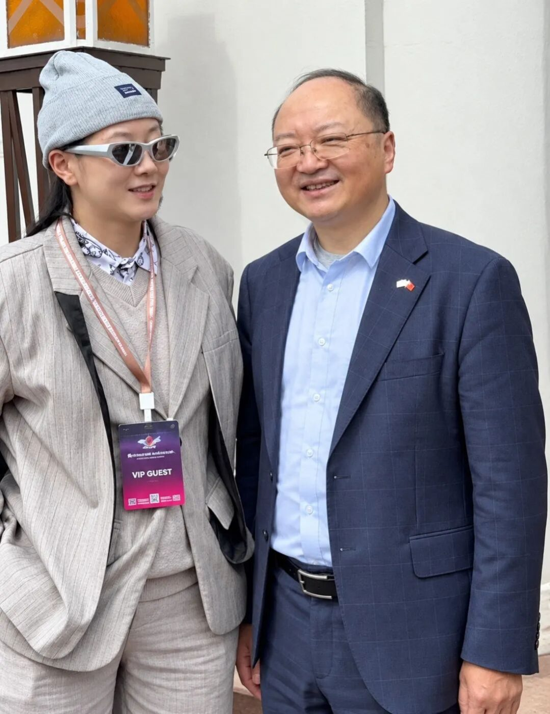
活动期间，黄欣悦与中国驻墨尔本总领事房新文进行交流，介绍了HYSTON在人工智能及Human Experience方向的最新进展。交流内容包括：
AI原生内容生产
ANGEL 26女性人生体验
个人与家庭记忆档案（Life Archive）
AI与酒店及实体空间相结合的探索
黄欣悦表示，HYSTON的长期定位是"AI-native infrastructure for human experience"（面向人类经验的AI原生基础设施）。
与Richard Welch MP探讨AI数据中心建设
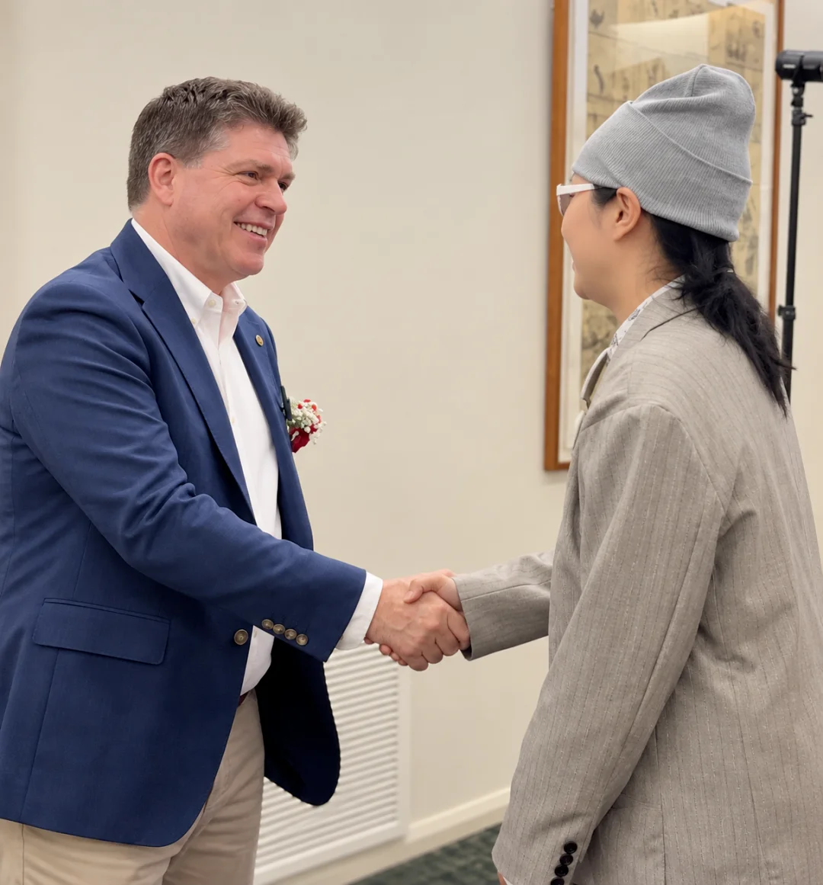
维州制造业与创新影子部长、智能与数字经济影子部长Richard Welch MP和Hyston
黄欣悦还与维州制造业与创新影子部长、人工智能与数字经济影子部长Richard Welch MP进行了交流。双方围绕AI数据中心建设展开讨论，涉及算力基础设施对维州产业竞争力的意义，以及数据中心如何带动上下游企业、服务与应用形成完整生态。
黄欣悦表示，数据中心是AI时代的基础设施，而基础设施的价值最终取决于其上能够生长出怎样的产品与服务。HYSTON关注的正是基础设施的另一端：当算力足够充分时，技术如何进入家庭、空间与个人生活，创造真实可感的体验。
与白马市市长交流技术与家庭记忆，并结识曼宁汉姆市副市长
黄欣悦与白马市市长Cr Kirsten Langford进行了较长时间的交流。双方从人工智能、城市创新谈到家庭记忆与女性生命经验。Langford分享了一件承载母亲与祖母记忆的家传饰物，双方就"物件背后的记忆如何被保存与传承"交换了看法。黄欣悦借此介绍了HYSTON正在探索的Life Archive方向：通过影像、声音、文字与AI整理，将个人经历形成可保存、可回看、可传递的人生档案。
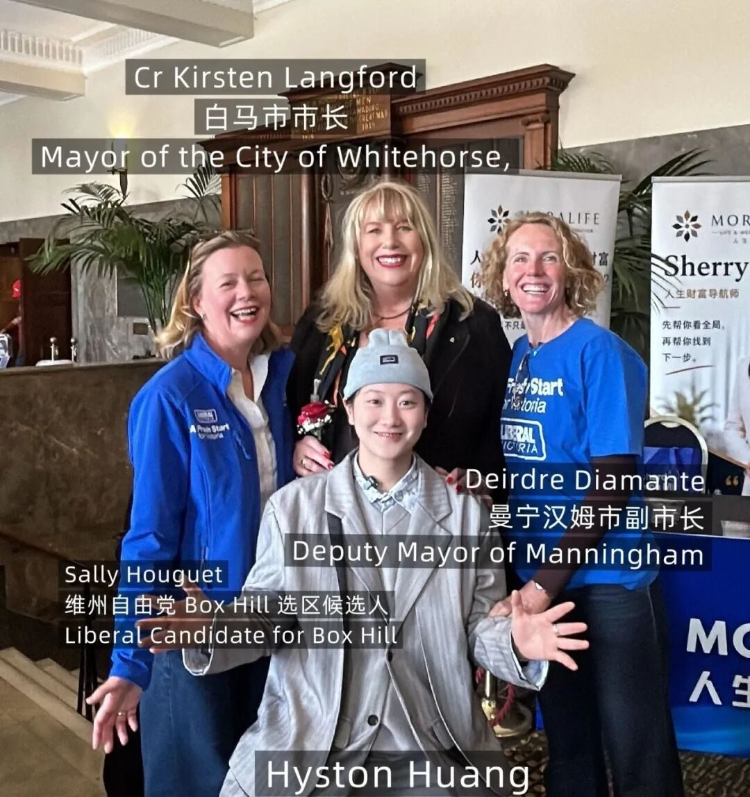
交流中，Langford市长还向黄欣悦引荐了曼宁汉姆市副市长Deirdre Diamante。几位地方政府及社区代表随后就技术、治理、社区发展及创新应用进行了交流，为HYSTON未来在社区创新与公共场景中的合作建立了新的联系。
与BYD比亚迪 Nunawading负责人交流AI与汽车行业应用
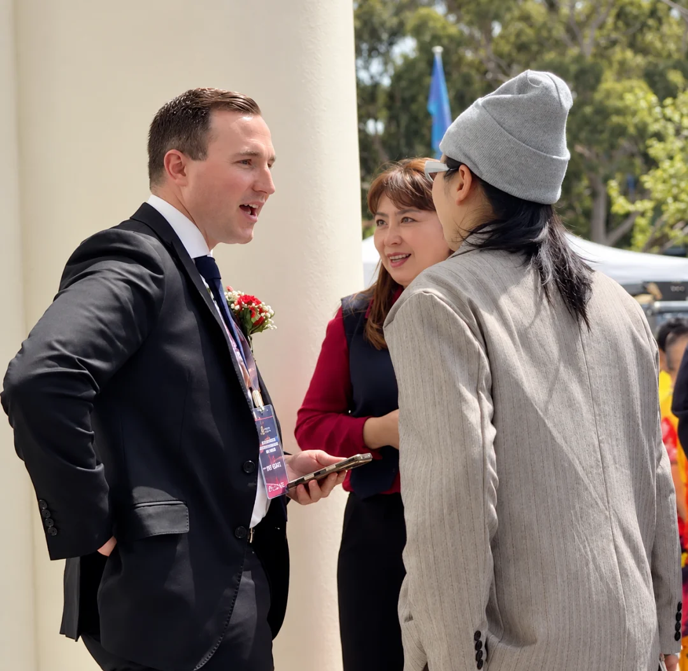
BYD Nunawading经销商负责人James Boulton与Hyston交谈
黄欣悦与BYD Nunawading经销商负责人James Boulton进行了深入交流。双方讨论了人工智能对比亚迪当前业务、汽车零售及客户体验的影响，以及AI未来如何进入新能源汽车销售、用户服务与线下门店等商业场景。
黄欣悦表示，相比将AI仅作为内容生成或后台效率工具，更值得关注的是AI如何进入消费者与品牌互动的全过程，包括以下方面：
理解客户需求
优化沟通
提升服务体验
帮助企业将技术能力转化为具体的商业价值
这一观点与当天论坛关于AI商业化的讨论相呼应。关键不在于企业是否已开始使用AI，而在于AI能否进入核心业务流程，并转化为用户可感知的体验改善。
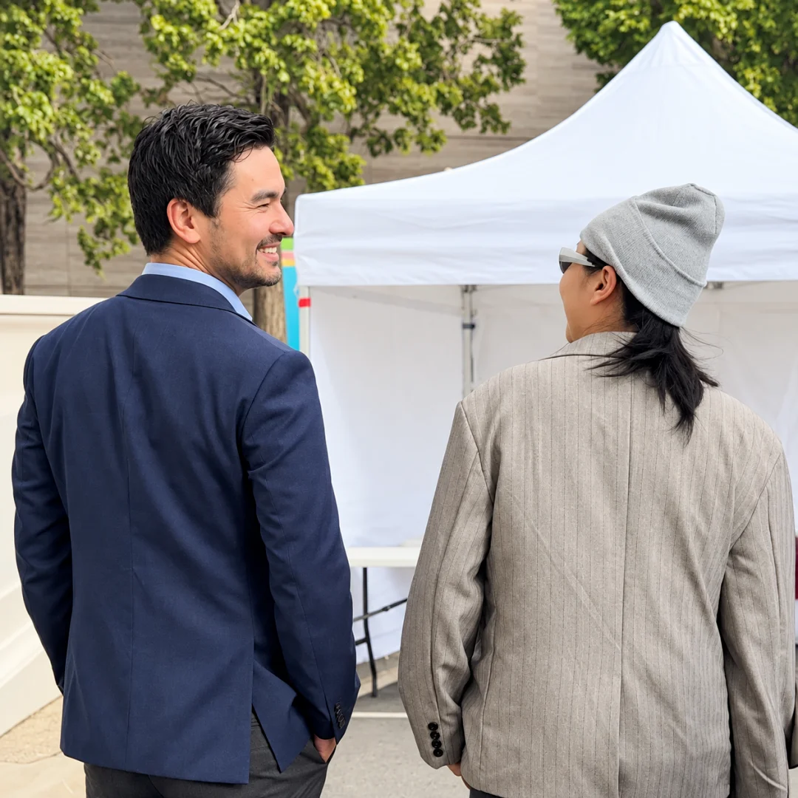
Menzies选区联邦众议员Gabriel Ng MP与Hyston叙旧
此外，黄欣悦与Gabriel Ng MP进行了交流，双方提及此前因天气原因取消的一次户外活动，并借此次活动再次叙谈。
黄欣悦会长：技术最终要回到人
谈及当天的协办感受，黄欣悦表示，中澳合作的意义不仅体现在宏观贸易数据中，更体现在两地居民生活方式、消费选择与产业机会的真实变化里。澳大利亚农产品进入中国市场，中国的科技、商业模式与消费经验也在持续影响澳大利亚。产品流动、商业连接与长期积累的人际信任，共同构成了双边关系中最具体、最有生命力的部分。
她表示："真正有价值的商业网络，不只是帮助企业完成交易，更重要的是让双方持续理解彼此、学习彼此，并在连接中创造新的合作方式与生活方式。"
对于当天论坛的讨论，黄欣悦认为，AI基础设施、商业化与Human Experience构成了一条完整链条：一端是数据中心、模型与算力，另一端是技术最终进入的家庭、城市、空间与个人生活。"如果说AI基础设施决定技术能走多快，那么Human Experience决定的是这些技术为什么存在。"
她表示："我们不是想让AI替人讲故事。我们想做的是，让那些原本可能消失的故事，有机会继续存在。当技术越来越快，人类的生命经验不能因此越来越薄。"
她还表示，无论是AI、汽车还是实体空间，技术只有进入具体的人、具体的场景与具体的体验，才能真正产生价值。
此次协办为澳洲川渝文化教育体育协会、澳洲重庆市商会了解维州创新产业发展、把握中澳企业与社区合作需求，以及拓展文化、教育、体育、商业、旅游与科技等领域的跨境交流，提供了新的连接窗口。
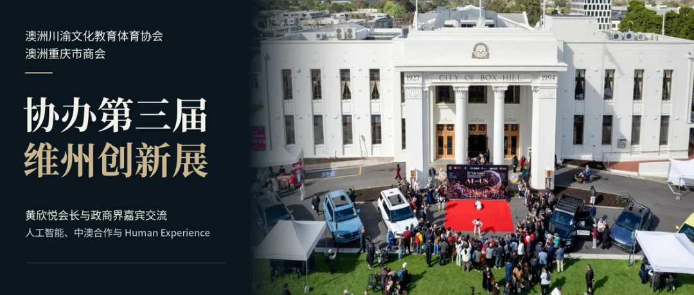
English Version
Australia Sichuan-Chongqing Culture, Education and Sports Association and Chongqing Chamber of Commerce in Australia Support the 3rd Victorian Innovation Expo
President Hyston Huang Engages Government and Business Leaders on AI, Australia–China Cooperation and Human Experience
MELBOURNE, 4 October 2026— The 3rd Victorian Innovation Expo & Food and Culture Festival was held today at Box Hill Town Hall, Melbourne. The event was jointly hosted by Ausfocus International Media Group and the Australia Asia Business Development Association. It was supported by organisations including the Australia Sichuan-Chongqing Culture, Education and Sports Association and the Chongqing Chamber of Commerce in Australia, with BYD as principal sponsor.
The program featured a bilateral trade forum, keynote presentations, business exhibitions and cultural experiences. It covered artificial intelligence, new energy vehicles, financial services, education, health and aged care, home living, food and lifestyle, bringing together businesses, public institutions and community organisations across sectors and cultures.
Distinguished guests included:
Fang Xinwen, Consul-General of the People's Republic of China in Melbourne
The Hon. Paul Hamer MP, Victorian Minister for Roads and Road Safety and Member for Box Hill
Gabriel Ng MP, Federal Member for Menzies
Richard Welch MP, Shadow Minister for Manufacturing and Innovation and Shadow Minister for AI and the Digital Economy
Aiv Puglielli MP
Cr Kirsten Langford, Mayor of the City of Whitehorse
Hyston Huang, President of both supporting associations and Founder of HYSTON, attended as a VIP guest and took part in the bilateral trade forum.
Forum Focuses on AI Infrastructure, Commercialisation and Public Trust
Richard Welch MP addressed AI infrastructure, data centres, social licence, regulatory frameworks and pathways to commercialisation. He said society must carefully consider how to guide technological development, unlocking innovation while addressing risks including privacy, the protection of young people, deepfakes and cybersecurity. Comparing data centres to rail networks as foundational infrastructure for regional competitiveness, he noted that the real economic value lies in the businesses, services and applications built around that infrastructure. He also emphasised pathways from ideas and intellectual property to products and markets, and the need for AI to enter core business operations rather than remain a surface-level tool.
Professor Wei Xiang delivered the keynote address, "From Data Centres to AI Factories: Powering Victoria's Innovation Economy," examining the relationship between compute infrastructure, the AI industry and Victoria's innovation economy.
Aiv Puglielli MP spoke on the digital economy, the green transition and the future of communities, stressing the need for risk safeguards alongside innovation.
Whitehorse Mayor Cr Kirsten Langford reflected on her personal experience of technological change. She first visited China in 1978, later studied applied science, worked in health technology and in mobile communications at Telstra. She recalled that ideas from the 1990s, such as phones with cameras, remote home control and video conferencing, have all become reality. She said Australia–China cooperation would continue to create opportunities in technology, AI and business, and encouraged the community to embrace innovation within appropriate frameworks of safety and responsibility.
James Boulton, Dealer Principal of BYD Nunawading, noted that new energy vehicle buyers care less about abstract specifications and more about charging convenience, practical space, and how a vehicle fits into daily life.
Briefing Consul-General Fang Xinwen on HYSTON's Latest AI Projects
During the event, Ms Huang briefed Consul-General Fang Xinwen on HYSTON's recent progress in AI and Human Experience, covering:
AI-native content production
ANGEL 26, a women's life-story experience
Personal and family memory archives (Life Archive)
AI applications in hospitality and physical spaces
She outlined HYSTON's long-term positioning: AI-native infrastructure for human experience.
Conversation with the Mayor of Whitehorse and Introduction to the Deputy Mayor of Manningham
Ms Huang held an extended conversation with Mayor Langford, moving from AI and urban innovation to family memory and women's life experiences. Mayor Langford shared a family heirloom connected to her mother and grandmother. The two discussed how the memories attached to objects can be preserved and passed on. Ms Huang introduced HYSTON's Life Archive initiative, which uses images, voice, text and AI to turn personal experiences into life archives that can be preserved, revisited and passed down.
Mayor Langford also introduced Ms Huang to Cr Deirdre Diamante, Deputy Mayor of the City of Manningham. The local government and community representatives went on to discuss technology, governance, community development and innovation, opening new connections for future collaboration in community innovation and public-sector applications.
Discussing AI in the Automotive Industry with BYD Nunawading
Ms Huang held an in-depth discussion with James Boulton on the impact of AI on BYD's current business, automotive retail and customer experience. They also discussed how AI may enter new energy vehicle sales, customer service and showroom operations.
Ms Huang noted that rather than treating AI merely as a content generation or back-office efficiency tool, the greater opportunity lies in how AI enters the full journey between consumers and brands, including:
Understanding customer needs
Improving communication
Elevating service experiences
Helping businesses translate technological capability into tangible commercial value
This echoed the forum's discussion on AI commercialisation. What matters is not whether a business has started using AI, but whether AI enters core business processes and delivers improvements customers can actually feel.
Ms Huang also caught up with Gabriel Ng MP, with the two recalling a tennis match recently cancelled due to Melbourne weather.
Hyston Huang: Technology Must Ultimately Return to People
Reflecting on the day, Ms Huang said the significance of Australia–China cooperation lies not only in macro trade figures, but in real changes to people's lifestyles, consumer choices and industry opportunities in both countries. Australian produce reaches Chinese consumers, while Chinese technology, business models and consumer experience continue to influence Australia. The flow of products, business connections and long-built personal trust form the most tangible and enduring part of the bilateral relationship.
"A truly valuable business network does more than help companies close deals," she said. "It helps both sides keep understanding and learning from each other, and through that connection, create new ways of working together and new ways of living."
She described the day's discussions on AI infrastructure, commercialisation and Human Experience as a single continuum. At one end are data centres, models and compute; at the other are the families, cities, spaces and personal lives that technology ultimately enters. "If AI infrastructure determines how fast technology can go, Human Experience determines why that technology exists."
"We are not trying to let AI tell people's stories for them," she said. "We want to give stories that might otherwise disappear a chance to keep existing. As technology moves faster, human experience must not become thinner."
She added that whether in AI, automotive or physical spaces, technology only creates real value when it reaches specific people, specific settings and specific experiences.
Participation in the expo provided both associations with a new window into Victoria's innovation sector and the cooperation needs of Australian and Chinese businesses and communities. It also opened channels for expanding cross-border exchange in culture, education, sport, business, tourism and technology.